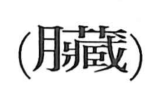

臓

Kun: harawata | On: zo
internal organs ・ viscera ・ entrails
Explanation
臓, formerly 臟, adds 肉, flesh, to 藏, now 蔵. 蔵 supplies the sound and the idea of something stored or concealed within. The flesh element, written 月 at the left, makes the bodily reference explicit: 臓 names the organs hidden inside the body.
These organs were also understood as places that stored vital energy. The older expression 蔵府 uses the language of storehouses for the internal organs; the later 臓腑 marks the bodily sense directly. 臓 therefore carries both the physical position of the organs within the body and their role as repositories of its sustaining energies.